Anna
Bettini
Graphic Designer & Social Media Strategist. Trasformo brief in identità visive, unendo rigore tipografico, pensiero strategico e flussi di lavoro AI-assisted.
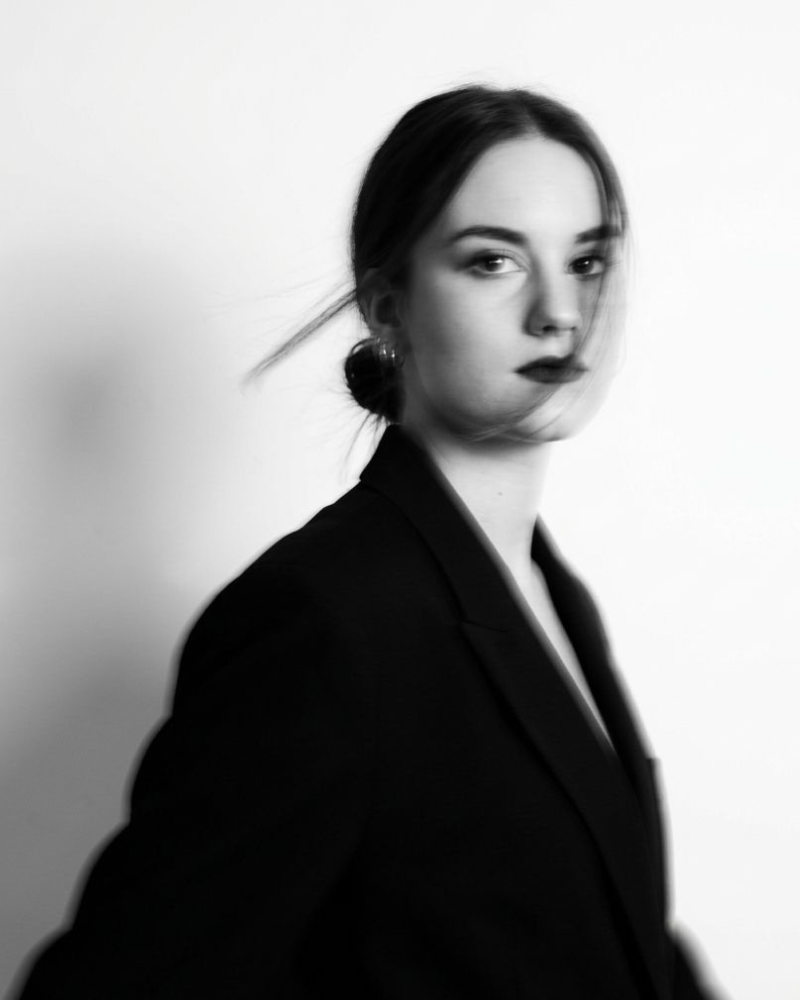
Designer con base a Padova, specializzata in identità visiva, comunicazione editoriale e strategia digitale. Il mio punto di differenza: integro i tool di Intelligenza Artificiale generativa come parte strutturale del workflow creativo — non come scorciatoia, ma come moltiplicatore di qualità e velocità. Il risultato finale resta rigorosamente controllato, raffinato e umano.
"Creatività non significa assenza di metodo.
Significa metodo al servizio di un'idea."
Hard Skills
- Adobe Illustrator · InDesign · Photoshop
- AI Generativa: Prompting avanzato, flussi di post-produzione
- Brand Identity & Logo Design
- Impaginazione editoriale stampa e digitale
- Social Media Strategy & Content Planning
- Tipografia, gerarchia visiva, layout
- Pre-stampa: file esecutivi, profili colore, verifica tecnica
Soft Skills
- Ascolto del brief e traduzione in soluzioni grafiche
- Gestione autonoma dei progetti e delle scadenze
- Cura maniacale del dettaglio tipografico
- Aggiornamento continuo su tool e trend di settore
Analisi di mercato quantitativa e qualitativa, strategia dei contenuti, marketing legale, integrazione AI nel workflow di business.
Cinque anni di studio intensivo del linguaggio visivo, composizione, progettazione grafica tradizionale e digitale. Base tecnica della Suite Adobe.
Preparazione e controllo di file esecutivi per la stampa. Adattamento grafico, gestione profili colore (CMYK/Pantone), ottimizzazione tecnica per produzione in serie. Contatto diretto con le logiche industriali della stampa.
Sviluppo di identità visive complete, piani editoriali social e materiali promozionali per piccole realtà aziendali. Suite Adobe + workflow AI generativa per asset visivi e contenuti scalabili.
Guida per visitatori in eventi culturali aperti al pubblico. Capacità di sintesi, comunicazione chiara di contenuti complessi e orientamento al pubblico eterogeneo.
Brand & Logo Design
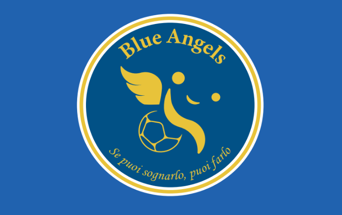
Logo ufficiale per ASD di bocce per persone con disabilità. Segno grafico che fonde carrozzina e boccia in un simbolo unico.
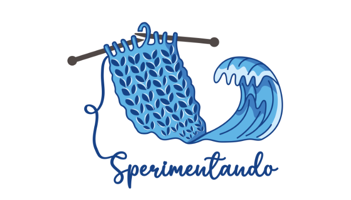
Logo vincitore assoluto per la mostra scientifica di Padova sul tema dell'acqua.


Blue Angels ASD
Progetto: logo ufficiale per associazione sportiva. Risultato: bando vinto.
Il problema: creare un'identità visiva che comunichi sport, inclusività e dinamismo, scalabile su supporti fisici (divise, striscioni, materiali promozionali) in una palette bianco-blu-giallo.
La soluzione: dopo una fase di ricerca visiva e moodboard, ho sviluppato un segno grafico originale: un atleta stilizzato con ali — richiamo esplicito al nome — dove le ruote della carrozzina coincidono visivamente con le bocce. Due simboli fondativi dell'associazione fusi in un unico gesto grafico, dinamico e immediatamente leggibile.
Il risultato: logo selezionato dalla commissione, attualmente in uso ufficiale.
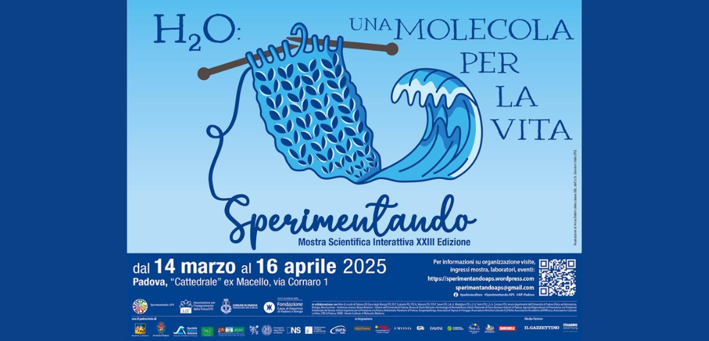
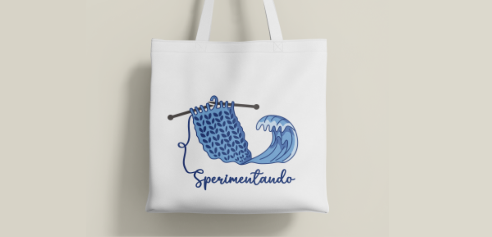
Sperimentando 2025
1° classificato su 257 progetti da istituti di tutta Padova.
Il contesto: Sperimentando è la principale mostra scientifica di Padova. Per l'edizione 2025, tema "acqua", il bando era aperto a tutte le scuole della città.
Il concept: ho associato la fluidità dell'acqua al gesto del lavoro a maglia — due processi che condividono pazienza, ritmo e intrecci invisibili. Il segno grafico risultante è poetico e scientifico insieme: una texture liquida che si tesse come un filo, evocando rigore metodico e bellezza naturale.
Il risultato: logo selezionato su 257 presentati, adottato come immagine ufficiale dell'evento.
Print & Editorial
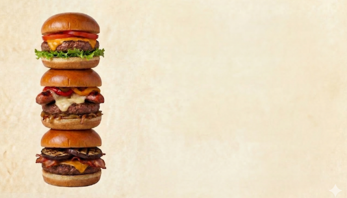
Architettura dell'informazione e gerarchia visiva per una linea di hamburger gourmet a tema (i Simpson). Layout pulito, lettura immediata, contemporaneo.
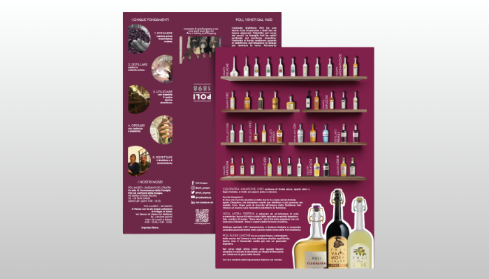
Brochure A3 con store illustrato che espone l'intera gamma di distillati per categoria.
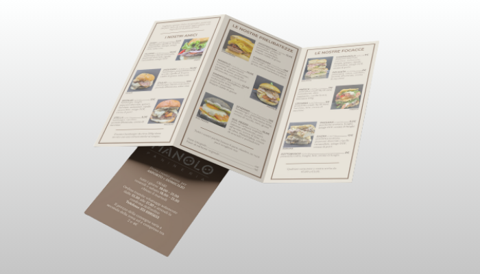
Listino commerciale attualmente in uso. Ascolto del brief, impaginazione funzionale, gerarchia chiara.
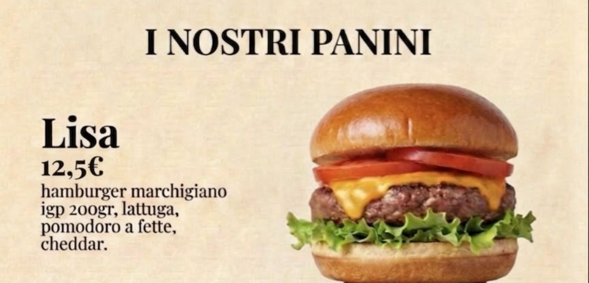
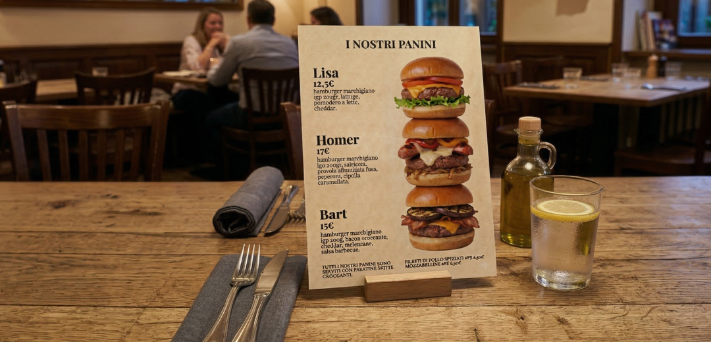
Fuori Menù Hamburger
Progetto: layout tipografico per un menù tematico hamburger gourmet.
Il problema: organizzare un menù con prodotti creativi (linea ispirata ai Simpsons: Lisa, Homer, Bart...) in modo che il nome del prodotto e il prezzo siano immediatamente leggibili al tavolo, con descrizioni ingredienti dettagliate che non appesantiscano la gerarchia visiva.
La soluzione: architettura tipografica a tre livelli gerarchici — naming del prodotto (display), prezzo (accent), ingredienti (body). Layout moderno, palette coerente col concept, lettura rapida garantita anche in condizioni di scarsa illuminazione.
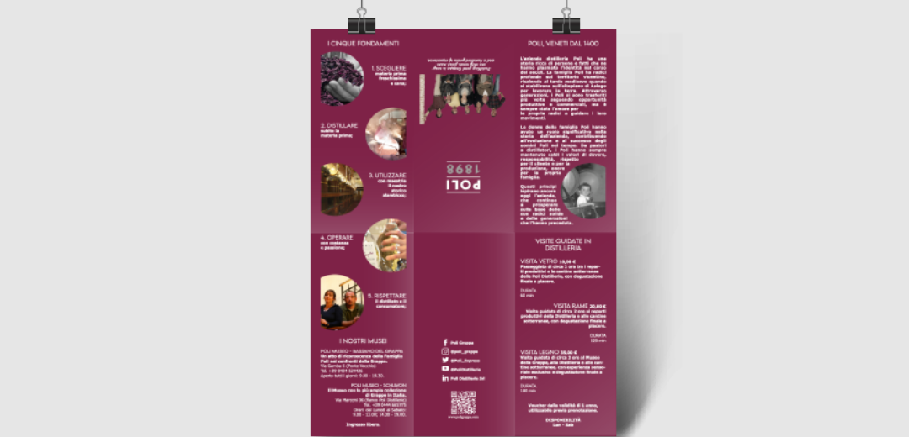
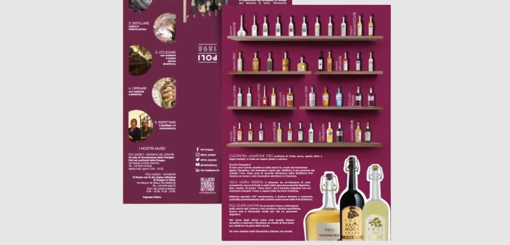
Poli Distillerie
Progetto accademico. Formato: brochure A3 bifacciale.
Realizzazione di una brochure per la storica azienda veneta Poli Distillerie. Il formato A3 aperto è stato sfruttato per una visuale illustrata che simula uno store fisico — scaffalature con l'intera gamma di distillati, suddivisi per categoria merceologica.
L'obiettivo era dimostrare la capacità di gestire un layout editoriale complesso su grande formato, con equilibrio tra immagine illustrata, testo informativo e brand heritage dell'azienda.
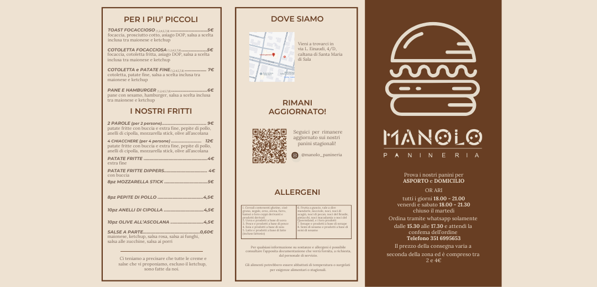
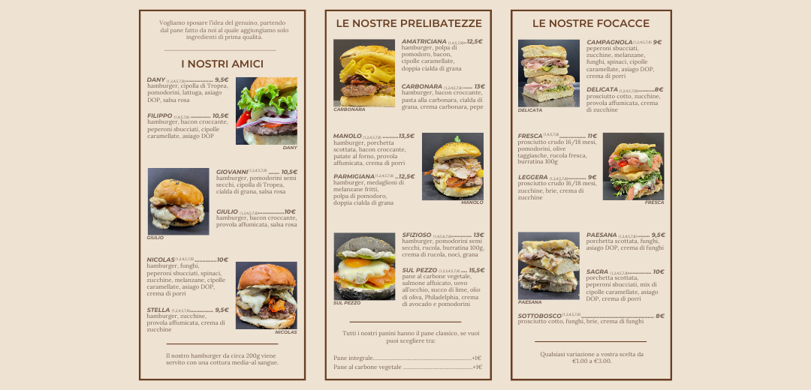
Manolo Panineria
Listino attualmente in uso nella sede. Progetto su committenza diretta.
Il valore di questo progetto: è una consegna reale, non accademica. Ho tradotto le esigenze operative del cliente in un prodotto grafico funzionale — leggibile, stampabile, aggiornabile — costruendo un template riutilizzabile in Adobe InDesign.
Il processo ha incluso ascolto del brief, revisione iterativa con il cliente e ottimizzazione del file per la stampa in tipografia. Un caso concreto di gestione completa del workflow grafico dalla brief alla consegna.
Web, Social & AI Content
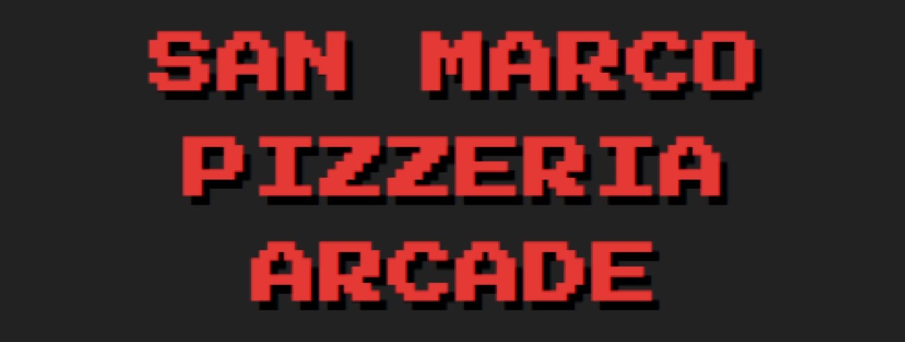
Web app gamificata in stile arcade anni '80 per Pizzeria San Marco. Idea, UX, design e sviluppo interamente guidati tramite Prompt Engineering avanzato. Risolvere il "panico da menu" con l'interazione.
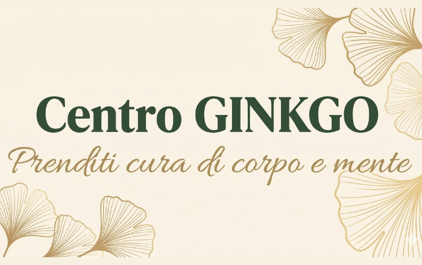
Materiale promozionale (flyer A5 + formati social) con workflow AI generativa + post-produzione Photoshop.
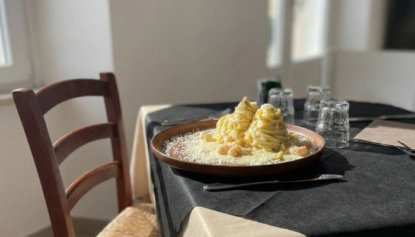
Direzione artistica e food styling assistito dall'AI per valorizzazione di prodotto sui social.


Pizzeria Arcade: "Che Pizza Sei?"
Web app live e funzionante. Sviluppata interamente tramite Prompt Engineering avanzato.
Il problema strategico: i clienti di Pizzeria San Marco soffrono di "panico da menu" — troppa scelta, poca decisione, bassa soddisfazione percepita. L'obiettivo era trovare un meccanismo che guidasse la scelta in modo divertente e memorabile.
La soluzione: un'esperienza web interattiva in stile sala giochi anni '80. Un quiz a domande associa la personalità del cliente a una pizza specifica del menu — trasformando una decisione banale in un momento di intrattenimento brandizzato.
Il metodo: ho ricoperto il ruolo di designer e product manager. Attraverso sessioni di Prompt Engineering avanzato ho diretto l'IA nella scrittura del codice, nella costruzione del design pixel-art e nell'architettura della UX. Zero competenze di sviluppo tradizionale richieste — competenza strategica e di prompting totale.
Prova la Web App in Diretta ↗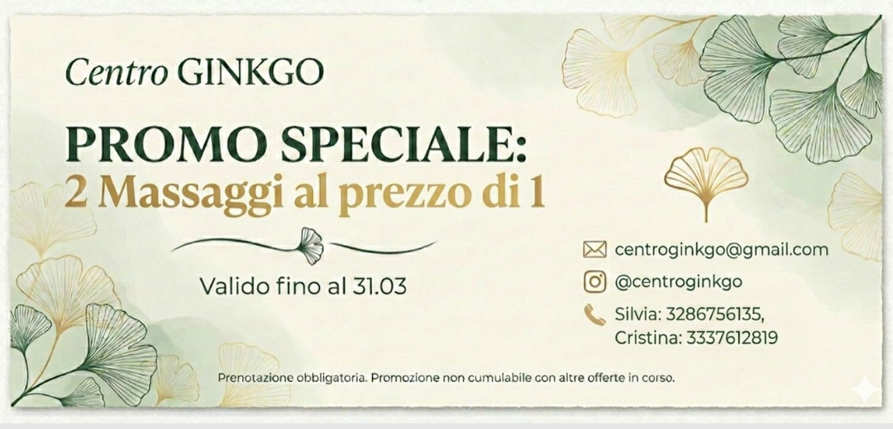
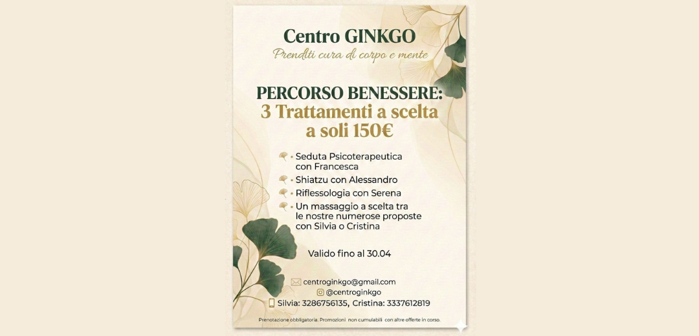
Centro Ginkgo
Materiali per campagna promozionale: flyer A5 cartaceo + formati digitali per social.
Il workflow adottato: ho usato tool di AI generativa per produrre asset visivi specifici — elementi botanici Ginkgo e background ad acquerello texturizzato. Questi asset raw sono stati post-prodotti, compositati e raffinati tipograficamente in Photoshop e Illustrator, garantendo coerenza, professionalità e un tono visivo rilassante adatto al settore benessere.
Il valore di questo progetto è dimostrare la mia capacità di dirigere l'AI come un art director dirige un fotografo — con brief precisi, revisioni iterative e controllo totale del risultato finale.
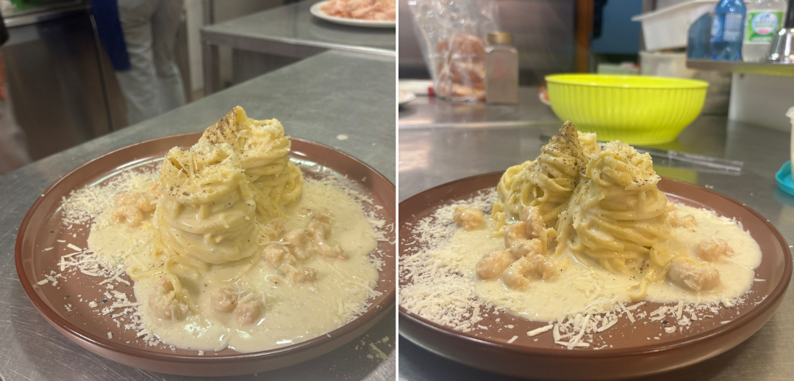
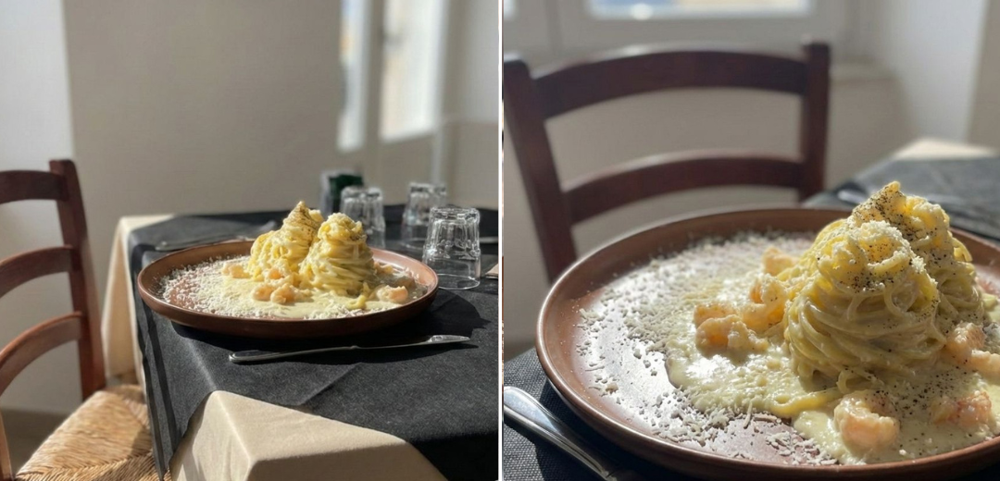
Food Styling & Content Creation
Contenuti visivi ad alto impatto per piano editoriale Instagram + Facebook nel settore ristorazione.
Il progetto: Creazione di scatti "appetizing" per valorizzare la texture artigianale di un piatto di spaghetti con gamberi.
Workflow integrato: Le immagini finali presentate in questo progetto sono state generate e perfezionate utilizzando strumenti di Intelligenza Artificiale, partendo da uno scatto di base effettuato rapidamente "al volo" all'interno del ristorante. Questo approccio ha permesso di ottimizzare radicalmente i tempi e i costi di un set fotografico tradizionale, garantendo comunque illuminazione, food styling e composizione perfetti per l'engagement social.
Marketing & Brand Strategy
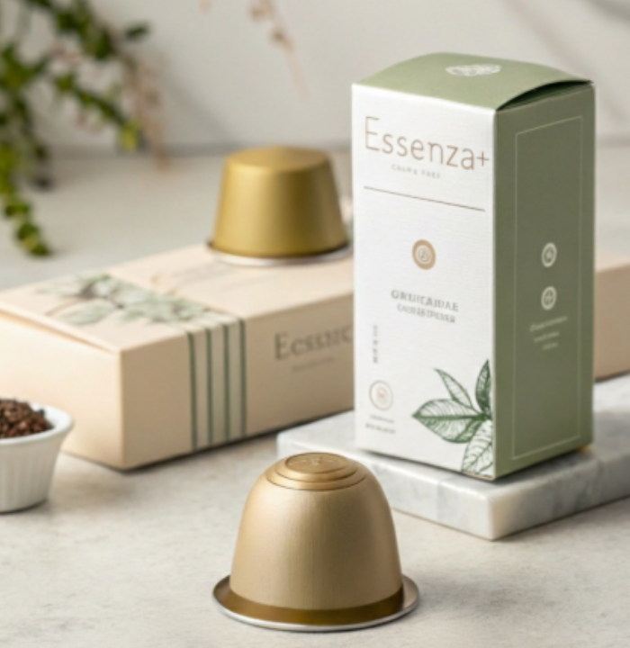
Analisi di mercato, posizionamento e copywriting per il lancio di un beverage funzionale alternativo al caffè. Dalla ricerca quantitativa alla scrittura degli script ADV.
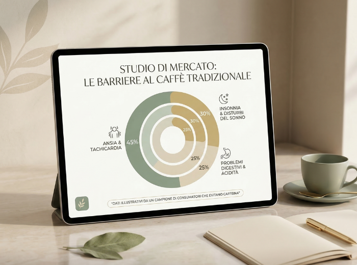
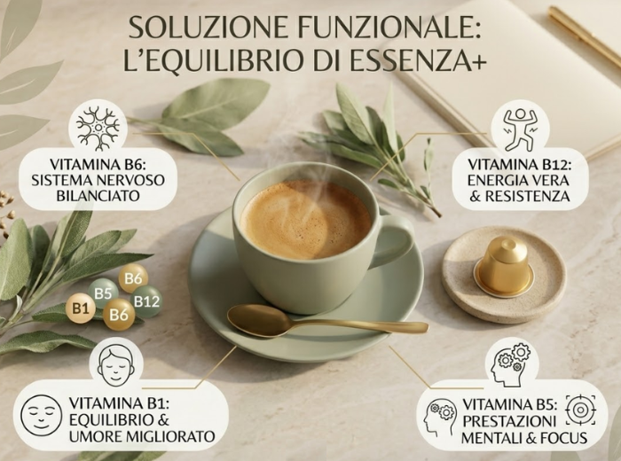
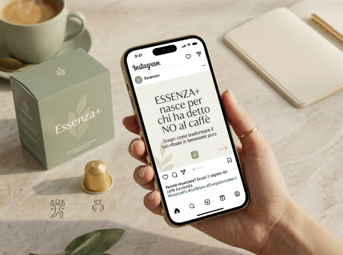
Essenza+: Più che un caffè
Caso studio completo: dall'analisi di mercato al lancio di un brand beverage funzionale. Progetto nato in ambito Corso Social Media Manager.
Il problema di mercato: i consumatori che evitano il caffè (per ansia, insonnia, problemi digestivi) ripiegano sul decaffeinato — un prodotto "sottrattivo", privo di benefici aggiuntivi. Una nicchia sottovalutata con alta propensione alla spesa.
La risposta strategica — Essenza+: bevanda funzionale caffeine-free, addizionata con complesso vitaminico B (B12, B6, B1, B5) per garantire energia autentica, focus cognitivo e vitalità senza nessuno degli effetti collaterali del caffè tradizionale. Posizionamento: premium, scientifico, quotidiano.
Output prodotti: analisi di mercato quantitativa/qualitativa (penetrazione, barriere all'acquisto, profilo target), brand positioning statement, script per Reel con approccio provocatorio ("Bevi decaffeinato... ma perché?"), copy per format Carosello educativo per il target consapevole.
Questo caso studio dimostra la capacità di attraversare l'intero processo di product marketing — dalla ricerca all'identità, dall'identità alla comunicazione.